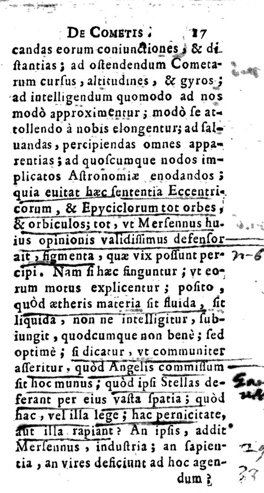
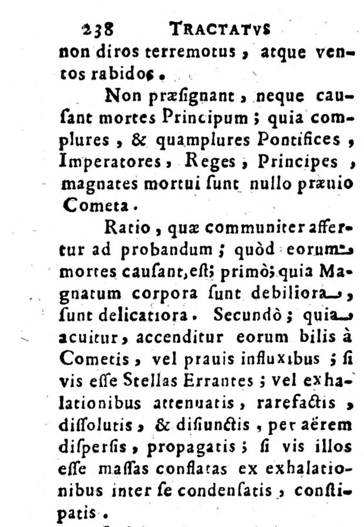

“As is commonly asserted, that this task has been committed to the angels” (p. 17)
Latin: Rome 1670, p. 17, scan. Roccamora is reporting the view that the heavens are fluid, not solid spheres, and its “most powerful defender”, Mersenne. Highlighted: the words behind Lecky’s note.

… because this opinion avoids all those orbs and little orbs of eccentrics and epicycles: all those fictions, as Mersenne, the most powerful defender of this opinion, says, which can scarcely be grasped. For if these are invented to explain their motions, then once it is supposed that the matter of the ether is fluid, is liquid, is not everything understood, he goes on, not merely well but excellently, if it is said, as is commonly asserted, that this task has been committed to the angels; that they carry the stars through its vast spaces; that they sweep them along by this law or that, at this speed or that? Do the angels, Mersenne adds, lack the diligence, or the wisdom, or the strength to do it?
Original Latin
… quia evitat haec sententia Eccentricorum, & Epyciclorum tot orbes, & orbiculos; tot, ut Mersennus huius opinionis validissimus defensor ait, figmenta, quae vix possunt percipi. Nam si haec finguntur, ut eorum motus explicentur; posito, quòd aetheris materia sit fluida, sit liquida, nonne intelligitur, subiungit, quodcumque non benè, sed optimè, si dicatur, ut communiter asseritur, quòd Angelis commissum sit hoc munus; quòd ipsi Stellas deferant per eius vasta spatia; quòd hac, vel illa lege; hac pernicitate, aut illa rapiant? An ipsis, addit Mersennus, industria; an sapientia, an vires deficiunt ad hoc agendum?
Lecky’s note supports his sentence that “the popular belief was that” the heavenly bodies “as well as all atmospheric changes were effected by angels”. Roccamora’s page says “commonly asserted” of the stars only; the weather is not mentioned here. The same note cites Isidore’s De ordine creaturarum, which this edition has not found.
“Because the bodies of the great are weaker”: comets and the deaths of princes (pp. 237–240)
Latin: Rome 1670, chapter XI, “Quid nam Cometae designant” (“What comets signify”), pp. 237–240, scans n267–n270. Abridged. Highlighted: the reasoning Lecky reports.

As for the eleventh question, the prognostics. Some think that comets neither foretell nor cause any misfortune: not the deaths of princes and changes of dominion; not commotions, wars, devastations, slaughters; not great droughts and dearths; not deadly diseases and plagues; not dire earthquakes and raging winds.
They do not foretell or cause the deaths of princes, because very many popes, emperors, kings, princes and magnates have died with no comet going before.
The reason commonly given to prove that comets cause their deaths is, first, that the bodies of the great are weaker, more delicate; second, that their bile is sharpened and inflamed by comets, whether by evil influences, if you hold comets to be wandering stars, or by exhalations thinned, rarefied, dissolved and separated, scattered and spread through the air, if you hold them to be masses made of exhalations packed and pressed together.
But they attack and weaken this reason, answering its first part: for who can better protect himself, who can better avoid such impressions, than princes, who always have doctors at their side, devoted to their health, and every medicine prepared and ready at a nod? They attack and weaken it, answering its second part: for princes, brought up in luxury, store up and feed less bile than other men; since they live in idleness and mostly indulge their gluttony, and are nearly all most lavish in eating and drinking … what piles up in them is undigested humours rather than bile. Not that, but phlegm above all abounds in them; so that they are helped by their constitution rather than harmed. …
Why, they add, should a comet rouse and inflame the bile of the great, and not that of rowers, reapers, peasants, who live on garlic and onions, and who increase their bile by labour, by exertion, by drinking the neat wine with which they try to strengthen themselves, and by the heat of the sun, to which they are endlessly exposed?
Original Latin
Quod spectat ad Undecimum, & ad Prognostica. Existimant nonnulli; quòd Cometae non praesignent, neque causent ullum infortunium. Non mortes Principum, & mutationes Dominiorum; non commotiones, bella, vastationes, caedes; non praegrandes siccitates, & penurias; non morbos exitiales, atque pestes; non diros terremotus, atque ventos rabidos.
Non praesignant, neque causant mortes Principum; quia complures, & quamplures Pontifices, Imperatores, Reges, Principes, magnates mortui sunt nullo praevio Cometa.
Ratio, quae communiter affertur ad probandum; quòd eorum mortes causant, est; primò; quia Magnatum corpora sunt debiliora, sunt delicatiora. Secundò; quia acuitur, accenditur eorum bilis à Cometis, vel pravis influxibus; si vis esse Stellas Errantes; vel exhalationibus attenuatis, rarefactis, dissolutis, & disiunctis, per aërem dispersis, propagatis; si vis illos esse massas conflatas ex exhalationibus inter se condensatis, constipatis.
Sed impugnant, & enervant rationem allatam huius primae parti respondendo; quia qui nam magis se praeservare possunt; qui nam possunt evitare melius tales impressiones, quam Principes, qui ad latus, & saluti eorum incumbentes semper habent medicos; nutibus parata, prompta quaelibet medicamenta? Impugnant, & enervant rationem allatam secundae parti respondendo; quia Principes, & in delitijs enutriti minus, quam alij bilim congerunt, & nutriunt; quia cum in otio vivant, & ut plurimum indulgeant gulae; cum sint in edendo, & in bibendo ferè omnes profusissimi … in ipsis aggerantur potius inconcocti humores, quam bilis. Non haec; sed pituita potius, flemma in ijs potissimum abundat; unde à constitutione potius adiuvantur, quam laeduntur. …
Cur debent, addunt, excitari, accendi potius magnatum bilis à Cometis, & non remigum, messorum, rusticorum, qui alijs, caepis vescuntur, qui labore, motu, potu vini puri, quo se quaerunt roborare, & aestu Solis, cui incessanter sunt expositi, bilim augent?
The deniers go on (p. 240) to say that comets do not cause plagues either: if comets are masses of exhalations, the air is purified as they burn away, “and surely, they say, Hippocrates cured all Greece of the plague with fires”.
Further down the rabbit hole
Sources that Lecky cites in the notes next to the ones that cite this page.
- Maury, Essai sur les légendes pieuses du moyen âgeThe stag that sucks serpents out of their holes, and the angel who carried the star of Bethlehem
- Agobard, Liber de imaginibusLecky’s five Agobard quotes checked against Baluze
- Aquinas, Summa theologiae, Supplement, q. 94Lecky’s quotation that is really a paraphrase
- Augustine, De TrinitateNobody knows what Christ looked like
- Augustine, De civitate DeiSeventy reports, not miracles, and a town, not a province
- Augustine, De natura et gratiaLecky’s three tiny changes to Augustine’s exception

Backlinks
Every place in Rationalism in Europe that links to this page (generated automatically when the site is built).